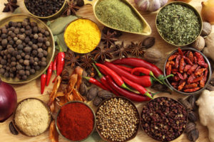
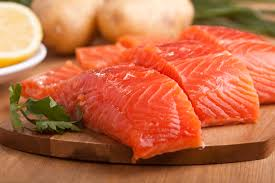
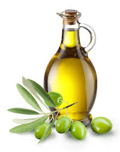

Benodigde ingrediënten
Om dit gerecht te kunnen voorbereiden heeft u naturlijk de ingrediënten nodig.
Ingrediënten
- 2 sjalotjes
- Olijfolie
- 4 zalmmoten á 150 g
- 50 g boter
- 250 g voorgekookte krieltjes met schil
- 800 g sperziebonen
- 1 el gedroogde tijm
- 1 el zeezout
Extra nodig: ovenschaal.


